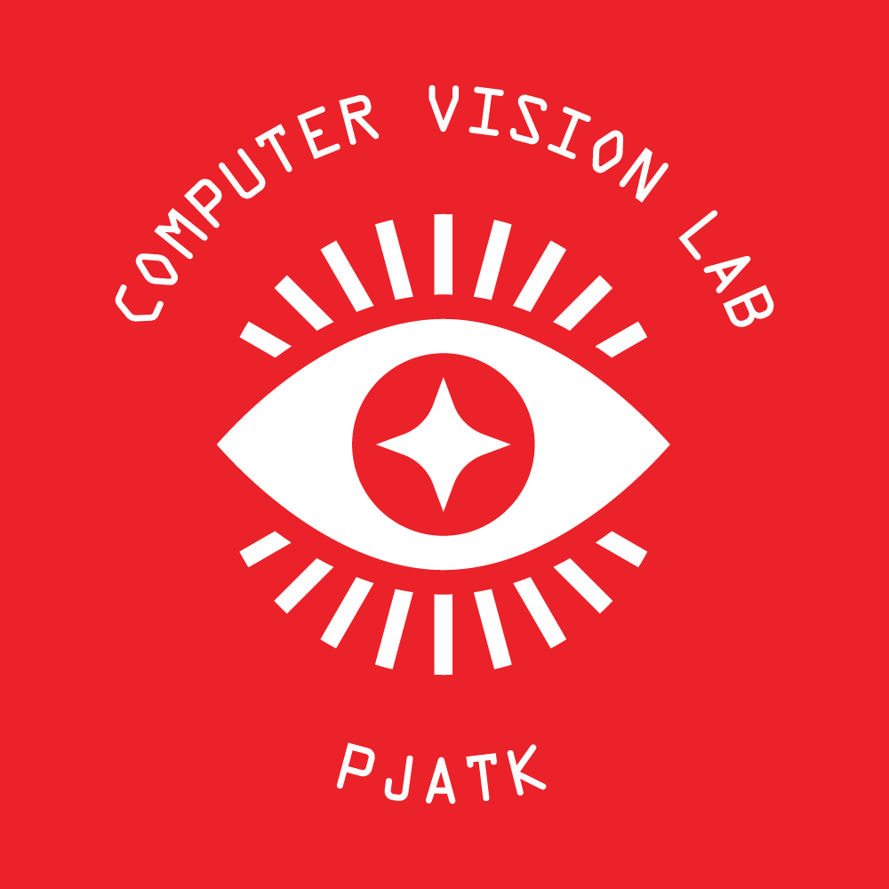

W planach
Nawigacja bez GPS
System nawigacji dla łazika planetarnego oraz do pracy w trudnych warunkach na Ziemi, tam gdzie sygnał GPS jest niedostępny. Położenie i trasa są wyznaczane na podstawie obrazu z kamer.
Koło naukowe Polsko-Japońskiej Akademii Technik Komputerowych
Computer Vision Lab skupia studentów zainteresowanych sztuczną inteligencją, przetwarzaniem obrazu i praktycznym wykorzystaniem nowoczesnych technologii. Stawiamy przede wszystkim na praktykę.
Głównym celem koła jest umożliwienie studentom bezpośredniego uczestnictwa w badaniach nad AI oraz rozwijania praktycznych umiejętności przez realizację własnych projektów przy wsparciu merytorycznym.
Chcemy wspólnie rozwijać pomysły, zdobywać nowe umiejętności i realizować projekty, w których wiedza ze studiów trafia do rzeczywistych zastosowań. Przygotowujemy publikacje naukowe, prezentujemy wyniki badań na konferencjach i bierzemy udział w konkursach.
Systemy wizyjne, które analizują obraz na bieżąco i od razu reagują na to, co widzą.
Inteligentne narzędzia, które pomagają w codziennym funkcjonowaniu.
Analiza obrazów medycznych i danych trójwymiarowych.
Projekt, który planujemy. Chcesz pracować nad nim od początku? Dołącz do zespołu.
W planach
System nawigacji dla łazika planetarnego oraz do pracy w trudnych warunkach na Ziemi, tam gdzie sygnał GPS jest niedostępny. Położenie i trasa są wyznaczane na podstawie obrazu z kamer.
Każdy piątek,
Sala A/357, PJATK, ul. Koszykowa 86
Zapraszamy zarówno osoby z doświadczeniem, jak i te, które dopiero zaczynają przygodę z AI.
Warsztaty
Praktyczne warsztaty z budowy systemu wizyjnego. Piątek, 17:30, sala A/357.
Wykład otwarty
Jak tomografia komputerowa wykorzystuje przetwarzanie obrazu, żeby odkryć wewnętrzną strukturę obiektów i stworzyć ich trójwymiarowe rekonstrukcje. Piątek, 17:30, sala A/357.

Rejestracja jest otwarta
Twórz z nami projekty, zdobywaj doświadczenie i odkrywaj możliwości sztucznej inteligencji. Być może Twój pomysł stanie się naszym kolejnym wspólnym projektem.